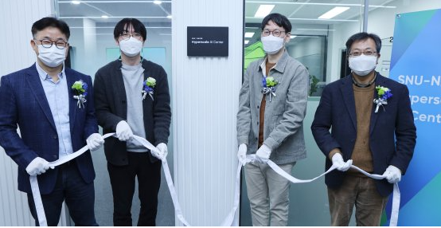
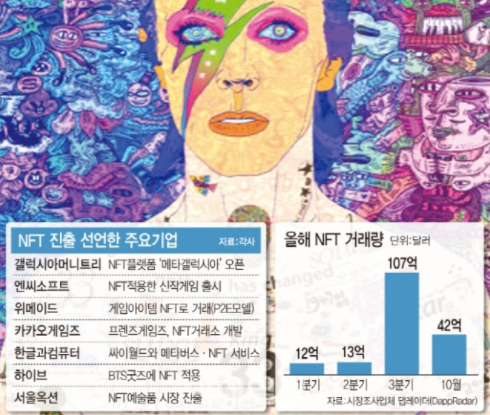
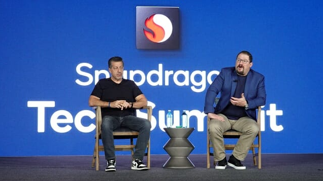
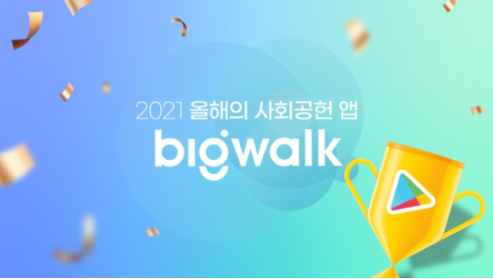

대체 텍스트
스포츠 주요뉴스

네이버-서울대, 초대규모 AI 협력연구 본격화
네이버는 ‘서울대-네이버 초대규모 AI 연구센터’를 위한 전용 연구 공간을 마련하고, 초대규모 인공지능(AI) 산학협력을 본격화한다고 2일 밝혔다. 네이버는 서울대 AI 연구원 안에 연구공간을 열고 지난 1일 현판식을 개최했다.

요즘 핫한 NFT 잘 아시나요?…"사실 모릅니다"
현 시점 전 세계에서 가장 많이 회자되는 키워드를 꼽으라면 두말할 나위 없이 ‘NFT’(Non-fungible token·대체 불가능 토큰)다. 최근 영어사전 출판사인 영국 콜린스가 해마다 선정하는 올해의 단어로 NFT를 뽑았다고 하니 신드롬 이상의 관심을 짐작해 볼 수 있다.

퀄컴 CEO "반도체 수급상황 낙관...내년이 더 좋다"
크리스티아노 아몬 CEO는 이날 오전 전세계 기자단을 대상으로 진행된 간담회를 통해 "지난 해 대비 공급 상태는 상대적으로 원활하며 내년이 되면 더 상황이 나아질 것"이라고 전망했다.
가상자산 과세 1년 유예...소득세법, 국회 본회의 통과
가상자산 과세 시행일을 2023년으로 1년 연기하는 내용의 소득세법 개정안이 국회 본회의를 통과했다.

'빅워크', 구글플레이 ‘2021 베스트 사회공헌 앱’ 최우수상
구글플레이는 매년 연말 엔터테인먼트, 일상 생활, 자기개발 등 여러 부문에서 한 해 동안 많은 유저에게 사랑을 받은 베스트 앱을 발표해 왔다. 특히 올해는 '사회공헌' 부문이 새롭게 추가, 빅워크가 최초로 수상 앱으로 선정됐다.
대체 텍스트